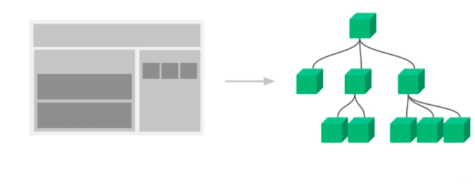
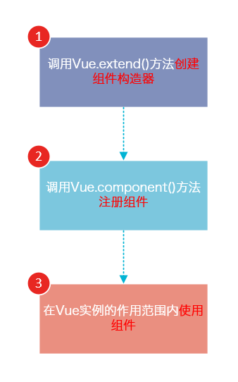
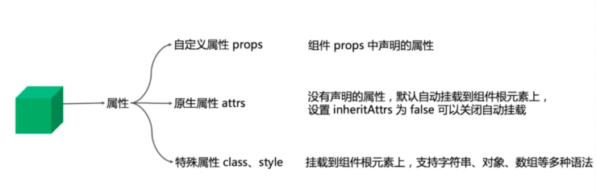
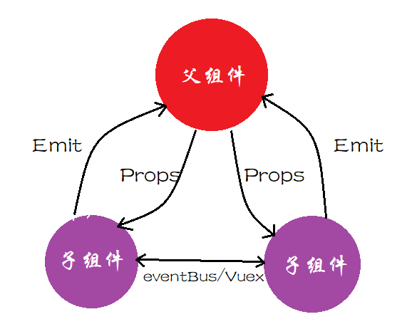
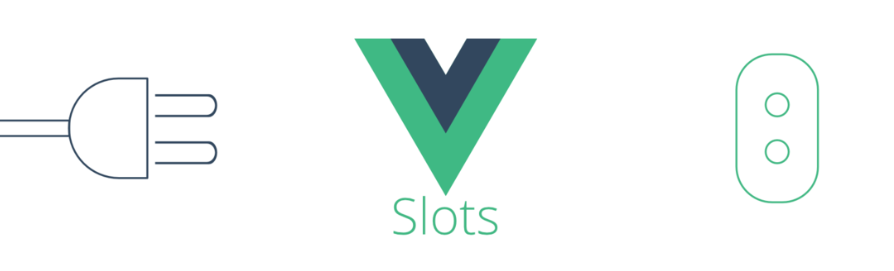
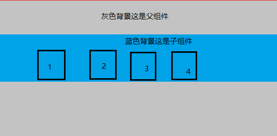
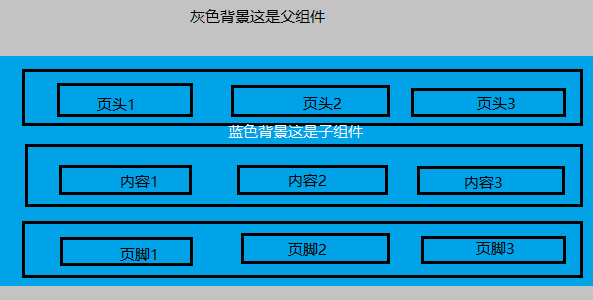
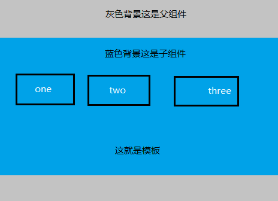
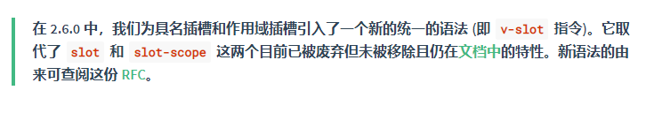

在上一篇初识Vue核心中，我们已经熟悉了vue的两大核心，理解了Vue的构建方式，通过基本的指令控制DOM,实现提高应用开发效率和可维护性。而这一篇呢，将对Vue视图组件的核心概念进行详细说明。
什么是组件呢？
组件可以扩展HTML元素，封装可重用的HTML代码，我们可以将组件看作自定义的HTML元素。
为什么要用到组件呢？
为了可重用性高，减少重复性开发，让我们可以使用独立可复用的小组件来构建大型应用。

一、组件注册

1.通过Vue.extend()创建，然后由component来注册
// extend 创建组件
var MyComponent = Vue.extend({
template: '<div>A custom component!</div>'
});
// component注册 组件
Vue.component('my-component', MyComponent);//使用到了 extend 创建的组件
var vm = new Vue({
el: '#app',
data: {
}
})说明：
extend 是构造创建一个组件的语法器，你给它参数 他给你创建一个组件， 然后这个组件，你可以作用到Vue.component 这个全局注册方法里， 也可以在任意vue模板里使用组件
var demo= Vue.extend({
….
})
Vue.component(‘demo’,demo)
可见上边的定义过程比较繁琐，也可以不用每次都调用两个，可以直接用 Vue.component 创建 ，也可以取组件 例如下
var demo= Vue.component(‘demo’)
2.全局注册
如果我们定义了多个 vue实例，我们都可以使用这一个组件
<div id="app">
<my-component></my-component>
</div>
<script>
//注意要在vue实例之前去定义，不然渲染页面的时候，会报错
// 定义一个名为 myComponent 的新组件
Vue.component(' myComponent ', {
template: `
<div id=" my-component ">
<p>2018 <a href="#">艾三元</a> - Hosted by <a href="#" style="font-weight: bold">Coding Pages</a></p>
<p>
<a href="#">京ICP备00000000号</a>
</p>
</div>
`,
data () {
return {
message: 'hello world'
}
}
})
var app = new Vue({
el: '#app',//没错，vue实例所定义的DOM元素就是这个，超过了这个区域，定义的组件会无效
data: {
},
})
</script>3.局部注册
表示只有在当前页面的app元素内使用
var app = new Vue({
el: '#app',
data: {
},
components: {
'my-component': {//这个就是我们局部组件的名字 在页面内使用 <my-component></my-component>
template: `
<ul class ="contact-list non-style-list">
<li>
<b class ="component">组件</b>: <a href="#">@艾三元</a>
</li>
</ul>`,
data () {
return {
message: 'hello world'
}
},
directives:{//自定义局部指令，使用的时候，直接可以 <my-component v-focus><my-component>
focus;{
inserted(el){
el.focus();
}
}
}
}
}
})注意：全局的组件是 component，而 局部的是 components

定义了这个组件有哪些可配置的属性，组件的核心功能也是由它确定。props最好用对象写法，这样可以针对属性设置类型，默认值或自定义校验属性的值。
<script>
export default {
name: "PropsDemo",
props: {
name: String,
type: {
validator: function(value) {
//从父级传入的 type，它的值必须是指定的 'success', 'warning', 'danger'中的一个，如果传入这三个以外的值，都会抛出一条警告
return ["success", "warning", "danger"].includes(value);
}
},
list: {
type: Array,
// 对象或数组默认值必须从一个工厂函数获取
default: () => []
},
isVisible: {
type: Boolean,
default: false
},
onChange: {
type: Function,
default: () => {}
}
},
methods: {
handleClick() {
// 不要这么做、不要这么做、不要这么做
// this.type = "warning";
// 可以，还可以更好
this.onChange(this.type === "success" ? "warning" : "success");
}
}
};
</script>
//用法
<props name='Hello World' //原生属性
:type='type'
:is-visible="false"
:on-change="handlePropChange"
:list=[22,33,44]
title="Demo" //原生属性
class="test1" //原生属性
:class="['test2']"
:style="{ marginTop: '15px' }" //注意:style 的优先级是要高于 style
style="margin-top: 10px">
一、父子通讯
1.父向子传值：
语法：在父组件中使用子组件时候，通过以下方式传递数据
<child-component v-bind:子组件prop="父组件数据属性"></child-component>
//定义一个组件，并在vue实例中定义了data选项
var vm = new Vue({
el: '#app',
data: {
name: 'keepfool',
age: 28
},
components: {
'my-component': {
template: '#myComponent',
props: ['myName', 'myAge']
}
}
})
定义一个组件
Vue.component('my-component', {
template: `
<div id="myComponent">
<table>
<tr>
<th colspan="2">
子组件数据
</th>
</tr>
<tr>
<td>my name</td>
<td>{{ myName }}</td>
</tr>
<tr>
<td>my age</td>
<td>{{ myAge }}</td>
</tr>
</table>
</div>`,
props: ['foo'],//这里根据组件的props属性，来被动接受组件传递来的参数
data () {
return {
message: 'hello world'
}
}
})
//将父组件数据通过已定义好的props属性传递给子组件：
<div id="app">
<my-component v-bind:my-name="name" v-bind:my-age="age"></my-component>
</div>注意：在子组件中定义prop时，使用了camelCase命名法。由于HTML特性不区分大小写，浏览器会把所有大写字符解释为小写字符，所以camelCase的prop用于特性时，需要转为 kebab-case（短横线分割命名）。例如，在prop中定义的myName，在用作特性时需要转换为my-name。
2.子向父传值：自定义事件
1） v-on绑定自定义事件：
每个 Vue 实例都实现了事件接口，即：$on(eventName) 监听事件 和 $emit(eventName) 触发事件
在父组件中：
<my-component v-on:child-say="listenToMyBoy"></my-component> //3、父组件通过监听，来获取到这个广播信号 child-say ，然后触发 listenToMyBoy 方法
<p>Do you like me? {{childWords}}</p>
methods: {
listenToMyBoy: function (somedata){ //4、incrementTotal 被触发，获取到参数 counter 值，执行相应的操作
this.childWords = somedata
}
}在子组件my-component中
<button v-on:click="onClickMe">like!</button> ////1、子组件内，有一个click，当点击的时候 触发 onClickMe 方法
methods: {
onClickMe: function(){
this.$emit('child-say',this.somedata); //2、方法被触发以后，向父组件 发送一个信号广播，并传递参数 somedata，名字就是 child-say
}
}通过子组件注册触发事件，父组件注册 触发子组件事件后的方法，传递参数，父组件通过监听子组件的事件，获取参数，执行响应的变化操作
完整示列
<my-component v-on:child-say="listenToMyBoy"></my-component> //3、父组件通过监听，来获取到这个广播信号 child-say ，然后触发 listenToMyBoy 方法
<p>Do you like me? {{childWords}}</p>
Vue.component('my-component', {
template: '<button v-on:click="onClickMe">like!</button>', //1、子组件内，有一个click，当点击的时候 触发 onClickMe 方法
methods:{
onClickMe: function(){
this.$emit('child-say',this.somedata); //2、方法被触发以后，向父组件 发送一个信号广播，并传递参数 somedata，名字就是 child-say
}
}
})
var vm = new Vue({
el: '#app',
data: {
childWords:''
},
methods:{
listenToMyBoy: function (somedata){ //4、incrementTotal 被触发，获取到参数 counter 值，执行相应的操作
this.childWords = somedata
}
}
})
Vue中的插槽，是组件的一块模板，由使用父组件提供。简单的说，就是子组件暴露一个让父组件传入自定义内容的接口，这样可以让使用者更好的拓展组件，进行更丰富的复用和定制化组件。
插槽Slot的三大分类：默认插槽、具名插槽和作用域插槽
1.默认插槽:直接在子组件的标签内写入内容即可
//父组件
<template>
<div class="father">
<h3>灰色背景这是父组件</h3>
<child>
<div class="tmpl">
<span>1</span>
<span>2</span>
<span>3</span>
<span>4</span>
</div>
</child>
</div>
</template>
//子组件
<template>
<div class="child">
<h3>蓝色背景这是子组件</h3>
<slot></slot>
</div>
</template>
2.具名插槽: 用name属性来表示插槽的名字，不传为默认插槽
//父组件
<template>
<div class="father">
<h3>灰色背景这是父组件</h3>
<child>
<div slot="header">
<span>页头1</span>
<span>页头2</span>
<span>页头3</span>
</div>
<div> //一个不带 name 的 <slot> 出口会带有隐含的名字“default”。
<span>内容1</span>
<span>内容2</span>
<span>内容3</span>
</div>
<div slot="footer">
<span>页脚1</span>
<span>页脚2</span>
<span>页脚3</span>
</div>
</child>
</div>
</template>
//子组件
<template>
<div class="child">
// 具名插槽
<slot name="header"></slot>
<h3>蓝色背景这是子组件</h3>
// 具名插槽
<slot></slot> //一个不带 name 的 <slot> 出口会带有隐含的名字“default”。
// 匿名插槽
<slot name="footer"></slot>
</div>
</template>
3.作用域插槽: 在作用域上绑定属性来将子组件的信息传给父组件使用，这些属性会被挂在父组件slot-scope接受的对象上
//父组件
<template>
<div class="father">
<h3>灰色背景这是父组件</h3>
<child>
<template slot-scope="number">
<div>
<span v-for="item in number.data">{{item}}</span>
</div>
</template>
</child>
<child>
这就是模板
</child>
</div>
</template>
//子组件
<template>
<div class="child">
<h3>蓝色背景这是子组件</h3>
// 作用域插槽
<slot :data="data"></slot>
</div>
</template>
export default {
data: function(){
return {
data: ['one','two','three']
}
}
}
注意：

内置指令v-slot，可以缩写为【#】
子组件用法保持不变，父组件中
slot属性弃用，具名插槽通过指令参数v-slot:插槽名 的形式传入，可以简化为 #插槽名。<template #header>
<div>具名插槽</div>
</template>slot-scope属性弃用，作用域插槽通过v-slot:xxx="slotProps"的slotProps来获取子组件传出的属性<!--作用域插槽-->
<template #footer="slotProps">
<div>
{{slotProps.testProps}}
</div>
</template>v-slot属性只能在<template>上使用，但在【只有默认插槽时】可以在组件标签上使用<template v-slot>
<div>默认插槽</div>
</template> 1.通过上述的描述，关于组件的了解有了更加进一步的认识，从组件的创建构造器到组件的组成，进而到组件的使用，已经丰富了多样式的组件，提高了复用性。
2.从组件的基本使用、组件属性，以及自定义事件实现父子通讯和巧妙运用插槽slot分发内容，进一步的认识到组件在Vue中的核心地位
3.参考资料官方文档